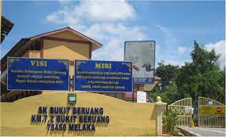
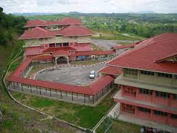
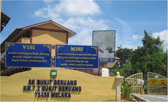
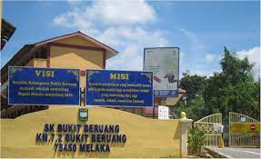

When I was 5 to 6 years old, my family and I moved to Melaka because my mother and father had moved to work in Melaka. I started my education in a kindergarten close to my father’s workplace but only for a short time as I moved to a new kindergarten which was quite a bit far from my father’s workplace. I finished my studies at Tadika ArifMurni in Batu Berendam when I was 6 years old. In my opinion, this kindergarten is very fun because we have a variety of activities to do and the teaching staff there is very fierce and firm but in fact, they are a loving and kind person.

After finishing my studies in kindergarten, I continued my studies for 2 and a half years at Sekolah Kebangsaan Gangsa where I only attended school until the middle of grade 3 only. The reason I moved to another school was that my sisters would be finishing their studies at that school and no one could take care and observe me at that school. So, I moved in the middle of grade 3 at my mother's school, Sekolah Kebangsaan Bukit Beruang. There, my life is quite easy because everything has been arranged by my mother such as buying food during the break where I do not have to go to my sister's class anymore to ask for money to eat because my mother has already prepared it in my mother's school canteen. Because of that, I sometimes feel like a VVIP who just needs to go to the canteen and pick up food while others have to line up to buy food.

When I was 13 years old, I went to school at Sekolah Menengah Arab (JAIM) Al-Asyraf in Alor Gajah. The school was the farthest place I had ever been at that time considering I was never far from my mom and dad. I went to school there during my high school days and I can't forget all the bitter and sweet memories I had at that school. My school is a school located on a hill and the wind is very cold at night. The experience when I went to school here taught me a lot about the meaning of life and also changed me a lot to be what I am now. No matter what problems and challenges I face, thank God I was able to overcome them with help from family and people close to me until now.
After graduating from school, I am now continuing my studies at UiTM Negeri Sembilan Branch, Rembau Campus, and taking a Diploma in Information Management. As long as I breathe, Rembau is a place that is quite far from my house even though the travel distance only takes less than an hour. My mom and dad were a bit reluctant to let me go to Rembau as they couldn’t come to visit every weekend like they did when I was boarding before. This is because the older I get, the busier they are working to earn a living for us as a family and I as a child need to understand their work. So I don't force them to come to visit me there every week because I don't want to bother and disturb their affairs. I am now a final semester student for the Diploma in Information Management and am striving to give my best for my family who has sacrificed so much for me.
I think this is the story of my learning journey and I hope that you all study hard to make your family proud, especially your mothers and fathers who sacrificed a lot of time and energy to earn a living for the family. That's all from me, stay safe, stay healthy and stay smile okay everyone!
 
